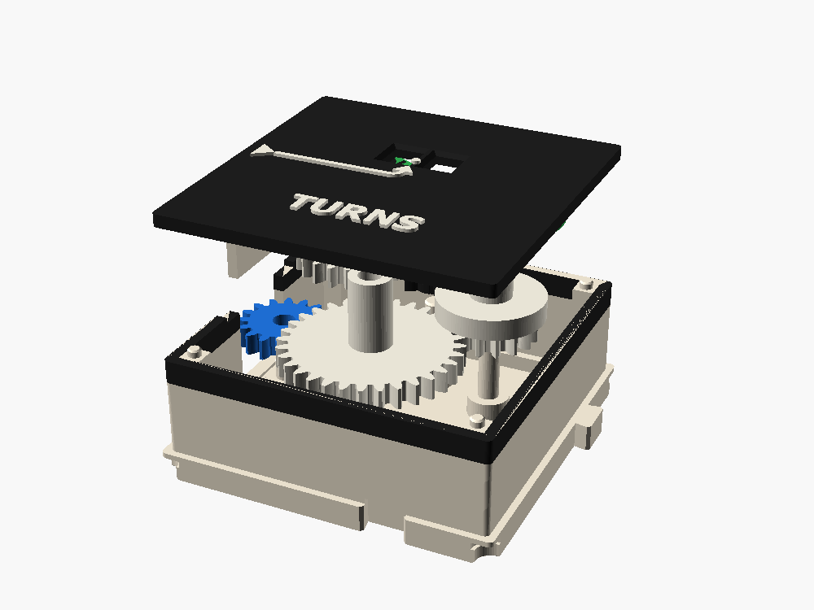
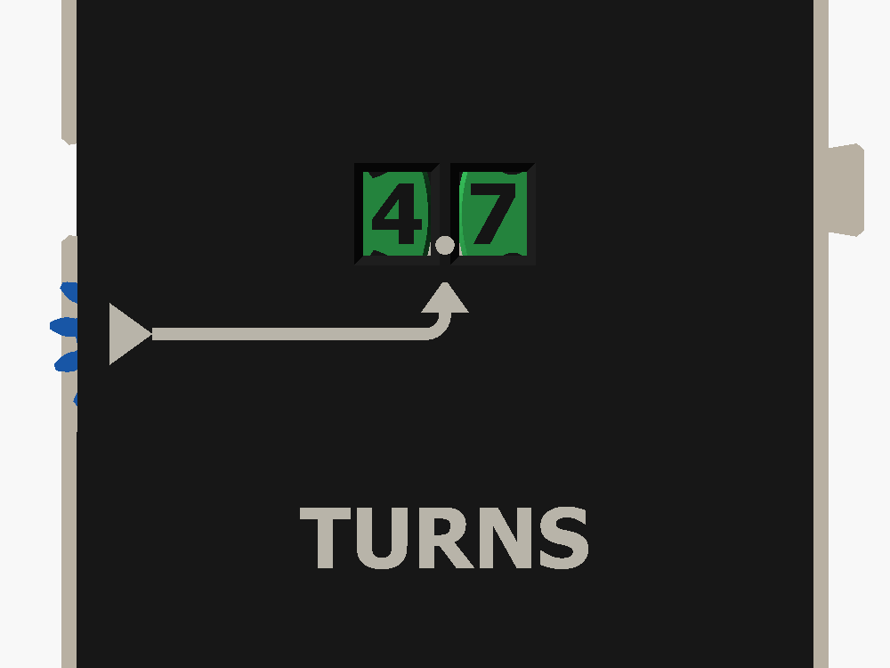

TURNS #
An odometer for the line. A tenths wheel turns with the input, and once per turn an odometer carry kicks the turns wheel on by one. Two windows in the lid show the count, 0.0 to 9.9.
1 cell · in: W · out: none (end box) · cost 4

Exploded view


What it does
Counts turns of the line to a tenth, 0.0 to 9.9, on two digit wheels under windows.
Ports and lanes
Seen from above, North up. Blue in, orange out. Solid ring: layer 1 (E/W). Dashed: layer 2 (N/S). Ticks mark lanes A, B, C.
| Port | Side | Lane | Teeth | Layer | Role |
|---|---|---|---|---|---|
| W | West | B | 16 | 1 | input |
W (16) → J (32) → U (16, tenths wheel; locking ring and carry tooth on layer 2) → carry pinion P (10, short and long teeth) → T (20 on layer 3, turns wheel). The lid reads TURNS.
Torque cost
4 of the crank's 20 stages · 4 of the motor's 15
4 stages. The carry needs a push each time the tenths wheel passes 9 to 0, so keep the counter within reach of a drive.
How it works
One turn of the line (16 teeth of travel) is one turn of the tenths wheel U, which shows 0 to 9 under its window.
U carries a locking ring with one notch and one carry tooth. Between carries the ring holds the pinion P still.
As U goes from 9 to 0, its carry tooth kicks P round 72°. P's full teeth on the next layer move the turns wheel T one digit.
The carry is the avionics pocket tools' tread-counter carry, laid flat (gbs_odo2d()); tools/sim_carry.py computes its path.
Why it is built this way
- Flat digit wheels under windows. The digits are inlaid on the wheels' top faces and come upright as they reach the window, so the counter reads from above like every other display.
- The wheels hold P down. P is a tall stack that reaches up to just under the wheels, so it needs no keeper of its own.
Parts and colors
| Part | Role | Color |
|---|---|---|
| shell, lid with two windows, keeper_W | structure | bone |
| port gear W | input | blue |
| stacks J, U, P, T | transmission | white |
| two digit wheels and the window lips | display | green |
How to assemble it
- Wipe a PTFE dry film on every pin. The pin is the bigger loss in a stage, and the lube roughly halves it.
- Build it in this order: port W, then J, U, P (its long teeth either side of U's ring), then T, then the digit wheels (before the lid), then the keeper and lid.
- Put a keeper on each side that has ports: its legs go in the notches and its flange in the recess on the wall top.
- Put the lid on. Its corner holes take the pins on the corner blocks.
To join it to a neighbor, lower it onto the neighbor's tongues from above.
What it teaches
- Place value and carrying, done by a mechanism.
- Intermittent motion again, this time as a carry.
- Where it's used: car odometers, tally counters, gas meters.